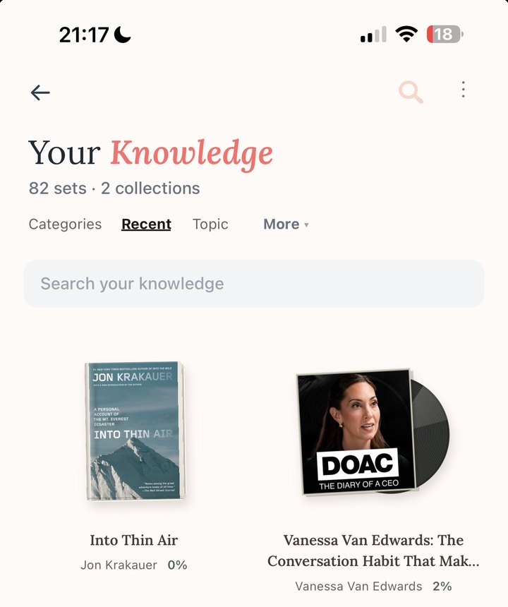
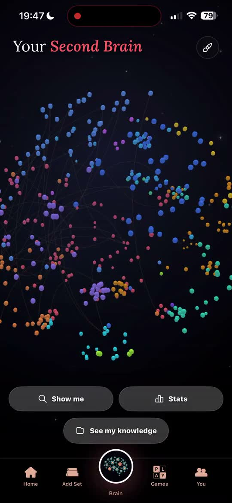
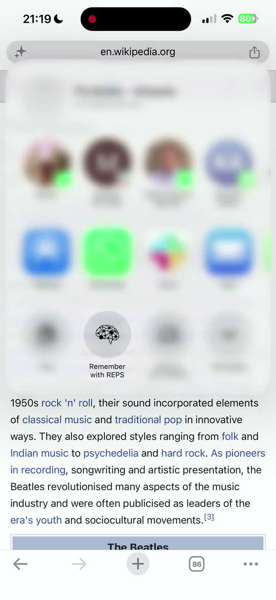
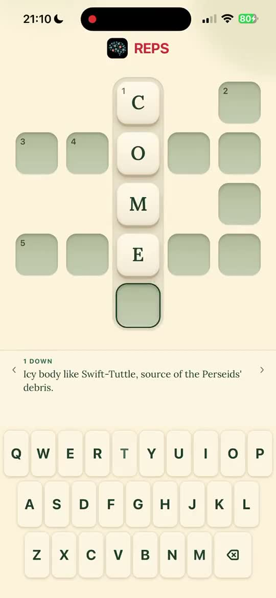

The feed takes. This gives back.
REPS is a free iPhone app that keeps what you read, watch and listen to, and brings it back as a short daily game built from your own material. Over weeks, the things you chose to keep come back to you. That is what we mean by a knowledge companion.
- BeforeTwelve years investing in technology, at CDPQ and then Inovia Capital, where he opened the European office
- SinceFull-time on REPS from July 2026
- ReadsLong reads, books and documentaries. Deleted Instagram in 2025.
I spent twelve years investing in technology companies. In 2025 I started building with AI every spare hour, and the more I built, the more I thought about where all that attention was going. Not mine only. Everyone's.
My nephews and nieces are growing up on YouTube Shorts. Half of it is slop, some of it AI slop, and none of it asks anything of them. I read that the Flynn effect, the century-long rise in measured IQ, has started to reverse. And I kept coming back to the argument Neil Postman drew between Orwell and Huxley. Orwell feared the people who would ban books. Huxley feared there would be no reason to ban one, because no one would want to read it. TikTok and Reels are proving Huxley right. Control without censorship, just entertainment that doesn't ask anything of you.
The tricks that keep you scrolling can bring back what you actually care about instead.
In 2025 I deleted Instagram, went back to long reads, documentaries and books, and started building the tool I wanted for myself. One tap saves the thing. It comes back as a quick game made from your own material, over the following days and weeks. No notes to take, no folders to sort. You just end up being the person who remembers the book.
I left my job on the 30th of June 2026, which happened to be my 34th birthday, to do this full-time. I'm on my own rebuild: one long read, one documentary, one book at a time. I'm building the antidote, and I'd love for you to try it.
Mike Founder, REPS
Three things we believe.
Forgetting is the default.
You finish the book. The episode ends. The tab closes. Then nothing ever brings it back up, and a feed only ever offers the next swipe.
You choose what stays.
The book you can still talk about. The idea you can explain to a friend. The line you can quote when it counts. None of it stays by accident.
It's play, not a chore.
Nobody keeps a habit out of guilt. A few minutes of play a day, made from what you saved. Easy to come back to, because it's a game, not a chore.
Save it once. It keeps coming back.
-
Save from anywhere.
Tap Share in Safari, YouTube, Spotify, Instagram or Apple Podcasts. Add a PDF, a screenshot, a note, a photo of your bookshelf, or type a book's title.
-
Keep the ideas you want.
REPS reads what you saved and lays out the ideas inside. You choose what's worth keeping. It's your library, not someone else's course.
-
Play a few rounds a day.
A short daily game built from your own saves, returning over days and then weeks. Crossword, Ladder and Cryptic are made from what you kept; Quotle, the daily quote game, and Friends Trivia round out five games to play.
-
And it's all yours.
Every book, episode and article you kept lives in your library, with its ideas and topics. Ask Echo about any of it, or explore it all as a graph.
Real screen recording, September 2026
Every point of light is something one person chose to keep.
Over weeks, what you save starts to connect. The book finds the podcast, the podcast finds the article you nearly lost. Turn it, zoom in, and see the shape of what you know.
Everything you need to write about REPS.
- NameREPS (pronounced like the gym word)
- TaglineYour Knowledge Companion
- What it isA free iPhone app that keeps what you read, watch and listen to, and brings it back as a short daily game built from your own material.
- PlatformiPhone, on the App Store. Interface in English. App Store listing →
- FounderMike McGraw. Twelve years in technology investing: he helped launch CDPQ's technology investment team, then joined Inovia Capital, where he opened the European office. Full-time on REPS since July 2026.
- CompanyREPS AI Ltd, a UK company
- SpellingREPS, always capitalised.
- Websitegetreps.io
- Give-backPlants real trees every month with JUST ONE Tree, far more than the app's AI uses. The planet pledge →
Boilerplate, short
REPS is an iPhone app that keeps what you read, watch and listen to. Save an article, a video, a podcast or a book in one tap, and it comes back as a short daily game made from your own material, over the following days and weeks.
Boilerplate, long
REPS is a knowledge companion for iPhone. You save what you read, watch and listen to, from any app, in one tap. REPS pulls out the ideas worth keeping and brings them back as a few minutes of play a day over the following days and weeks. Crossword, Ladder and Cryptic are built from each person's own library, Quotle and Friends Trivia round out five games, and everything saved connects into an explorable graph of what they know. REPS was built by Mike McGraw, a former technology investor who went full-time on it in July 2026, as a deliberate alternative to the feed, using the pull of a game to bring back the things you actually care about. It is on the App Store.
Founder bio, third person
Mike McGraw is the founder of REPS. He spent twelve years investing in technology, first helping launch CDPQ's technology investment team, then at Inovia Capital, where he opened the firm's European office. In 2025 he started building with AI in his spare hours and deleted Instagram for good. On 30 June 2026, his 34th birthday, he left to work on REPS full-time.
Lines you can quote
- "Most apps compete for your attention. REPS compounds it." REPS brand line
- "The feed takes. This gives back." REPS brand line
- "TikTok and Reels are proving Huxley right. Control without censorship, just entertainment that doesn't ask anything of you." Mike McGraw, founder
- "My nephews and nieces are growing up on YouTube Shorts. Half of it is AI slop. I'm building the antidote." Mike McGraw, founder
Assets
-
App icon
-
Founder photo
-

Library screen -

Knowledge graph -

Save from anywhere -

Crossword


support@getreps.io with "Press" in the subject. The founder reads and replies. Interviews and demos are open.
Learn something. Grow something.
The AI that powers REPS uses a little energy. So every month we plant real, countable trees for it, far more than we use, with JUST ONE Tree. Read the pledge
Most apps compete for your attention. REPS compounds it.
Free on the App Store.